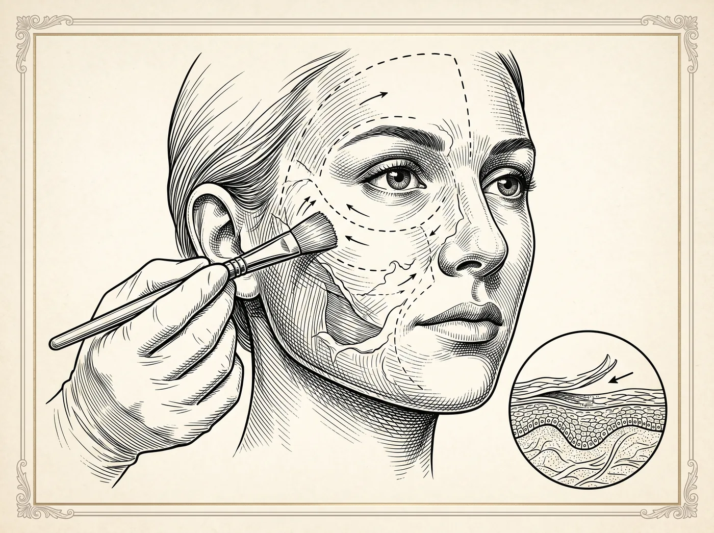

Tecnologia · Procedimento não cirúrgico
O BodyTite utiliza radiofrequência bipolar para tratar gordura localizada e flacidez de pele em um mesmo procedimento minimamente invasivo. Pode ser aplicado em regiões como abdome, braços, coxas e papada — isolado ou associado à lipoaspiração.

Objetivos do procedimento
Todo procedimento possui indicações, contraindicações e riscos. A avaliação individual com um médico é indispensável para indicar o tratamento adequado a cada caso.
Perguntas frequentes
A radiofrequência bipolar aquece os tecidos de forma controlada, por dentro e por fora, atuando sobre a gordura e estimulando a retração da pele.
É um procedimento minimamente invasivo, que pode ser realizado em ambiente adequado de consultório ou em centro cirúrgico, conforme a extensão e o caso.
É um procedimento médico, conduzido por cirurgião plástico ou dermatologista treinado na tecnologia.
Não necessariamente. Flacidez acentuada com sobra de pele costuma ter indicação cirúrgica; a radiofrequência atende graus mais leves. A avaliação define o caminho adequado.
O próximo passo
Cada caso é um caso — e é exatamente assim que tratamos. Agende uma avaliação e converse com quem vive essa especialidade.